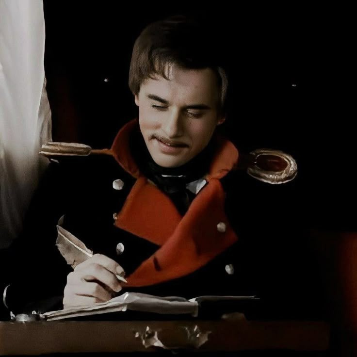

"Я был готов любить весь мир..."
"Я был готов любить весь мир, — меня никто не понял: и я научился ненавидеть."
Я лишь хотел найти себя,
Найти и тех кто понял бы меня,
Но я вокруг всем чужд и ненавистен,
Ведь что для нас "друзья"?
Приятели? Партнеры? Юмористы?
Я был для них в роли шута,
Они смеялись, я веселился.
Ведь смех иллюзия обмана,
Сегодня весело, а завтра врут.
Они смеялись не от шуток,
Им просто весело с тебя!
Но погодите есть еще и люди,
Для них ты был "надежный друг",
Но вся надежда угасает,
Когда проблемы исчезают,
И с ними это слово - "друг".
Зачем клялись и говорили,
Что я вам нужен, я вам важен.
Прошла беда и ты не нужен,
А если беды у меня?
Так мы и вовсе не поможем,
У нас история своя...
Может меня не любят?
Нет, меня любят друзья и моя семья.
На свете много пустословов,
И тех кого зовут "друзья",
Но знайте всех нас любят,
Семья и настоящие друзья!
Я знаю много сделал я говна,
Но тот кто искренен со мною,
Тому помочь готов всегда!
